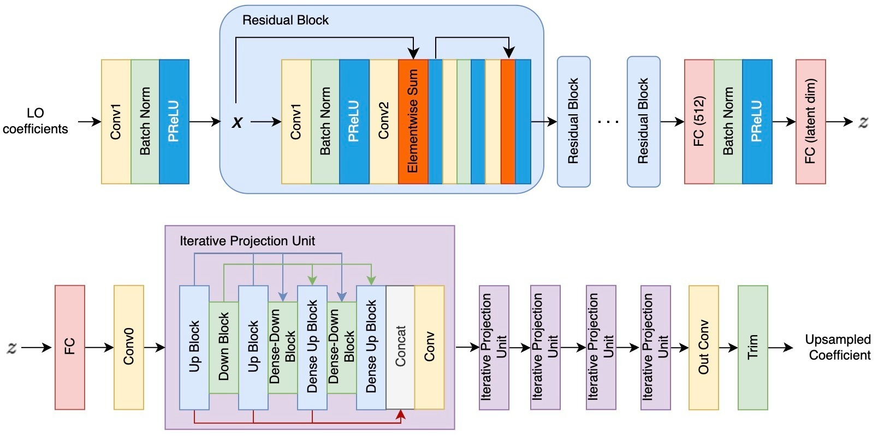
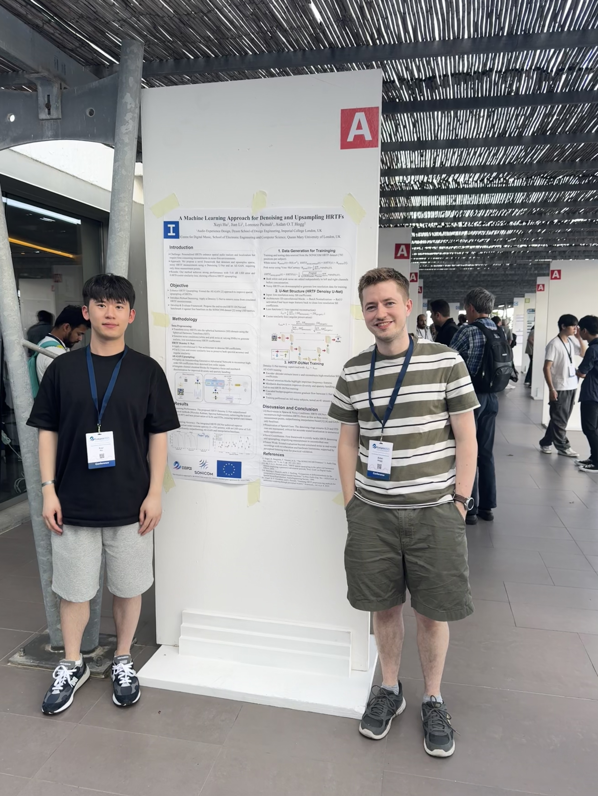
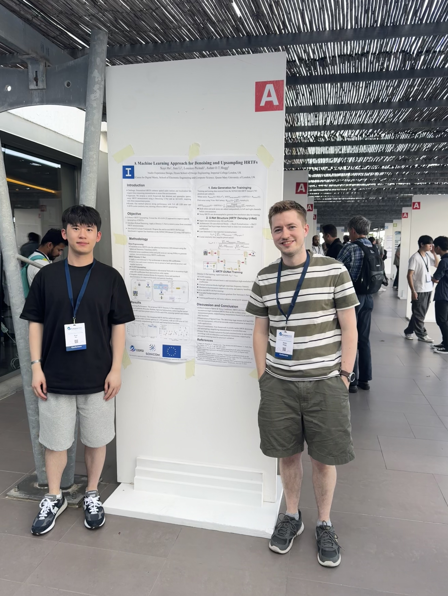

About
×

Selected Publications and Manuscripts
Immersive Audio Rendering

Head-Related Transfer Function Upsampling Using an Autoencoder-Based Generative Adversarial Network with Evaluation Framework
Journal of the Audio Engineering Society

A Machine Learning Approach for Denoising and Upsampling HRTFs
EUSIPCO 2025

HRTF Spatial Upsampling in the Spherical Harmonics Domain Employing a Generative Adversarial Network
DAFx 2024 (Oral)

Uniformity in heterogeneity: Diving deep into count interval partition for crowd counting
ICCV 2021

 
